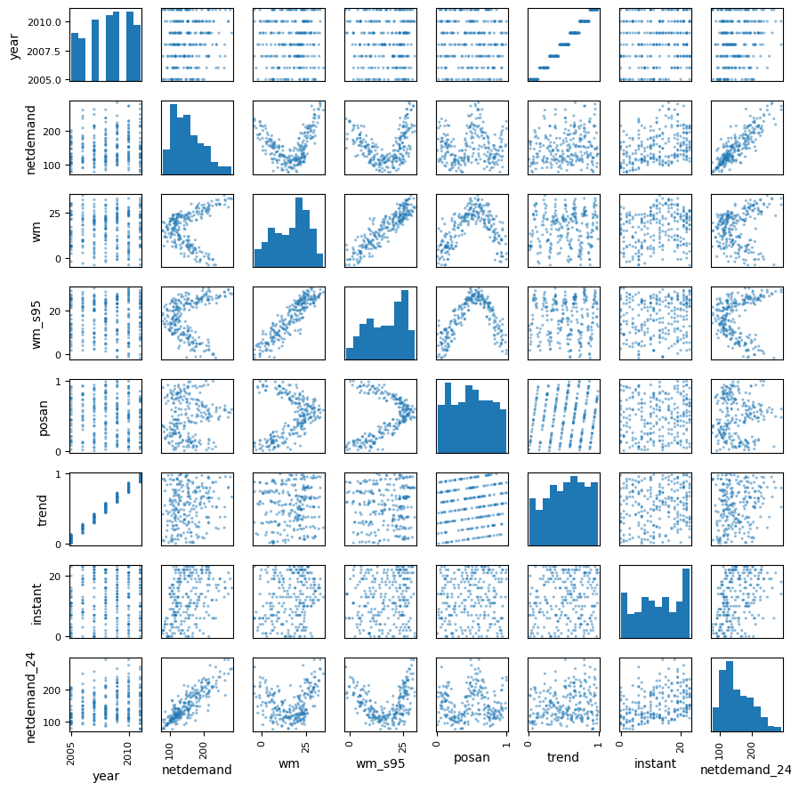
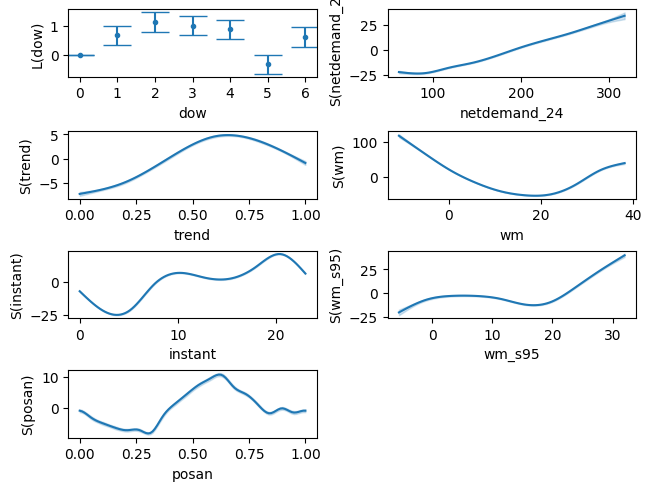
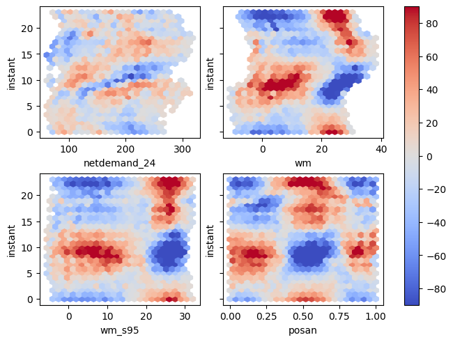
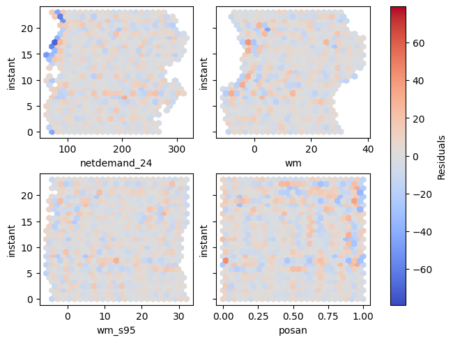
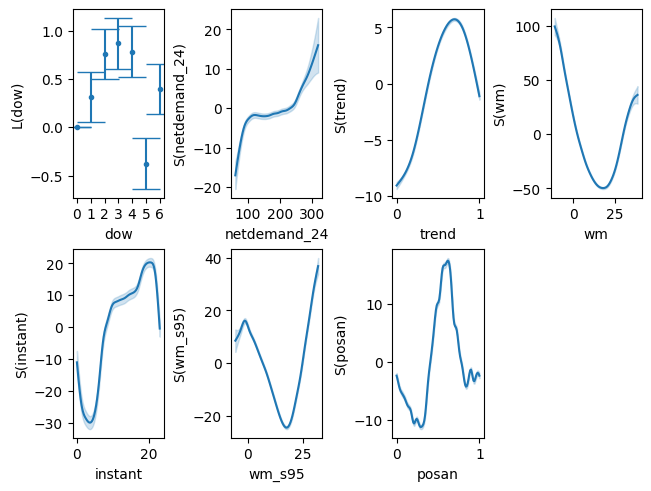
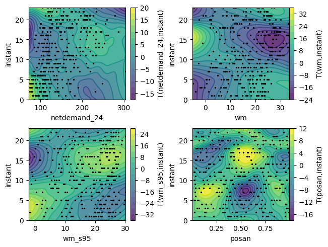

Electricity modelling with a BAM
This example includes fitting a big data GAM (BAM) to UK electricity demand data, taken from the national grid. The dataset contains:
- NetDemand – net electricity demand
- wM – instantaneous temperature, averaged over several cities
- wM_s95 – exponential smooth of
wM - Posan – periodic index in \([0, 1]\) indicating the position along the year
- Dow – factor variable indicating the day of the week
- Trend – progressive counter, useful for defining the long-term trend
- Instant - The hour \([0, 23]\)
- NetDemand.24 – 24 hour lagged version of
NetDemand - Year - the year
import matplotlib.pyplot as plt
import pandas as pd
import pymgcv.plot as gplt
from pymgcv.terms import L, S, T
from pymgcv.utils import load_rdata_dataframe_from_url
data = load_rdata_dataframe_from_url(
"https://github.com/mfasiolo/testGam/raw/master/data/gefcom_big.rda",
)
data.columns = [c.lower().replace(".", "_") for c in data.columns]
data["dow"] = data["dow"].astype("category")
pd.plotting.scatter_matrix(data.sample(n=250), s=20, figsize=(9,9))
plt.tight_layout()

from pymgcv.basis_functions import CubicSpline
from pymgcv.gam import BAM
gam1 = BAM(
{
"netdemand": (
L("dow") + # Encoded as category
S("netdemand_24", bs=CubicSpline()) +
S("trend", k=6, bs=CubicSpline()) +
S("wm", bs=CubicSpline()) +
S("instant", bs=CubicSpline()) +
S("wm_s95", bs=CubicSpline()) +
S("posan", bs=CubicSpline(cyclic=True), k=20)
),
},
)
gam1.fit(data, discrete=True, n_threads=1)
gplt.plot(gam1)
plt.show()

Check whether the bases are large enough
term max_edf edf k_index p_value
0 s(netdemand_24) 9.0 8.371362 0.976239 0.0475
1 s(trend) 5.0 4.938627 0.714899 0.0000
2 s(wm) 9.0 8.961725 1.000205 0.4850
3 s(instant) 9.0 8.989825 1.016310 0.9075
4 s(wm_s95) 9.0 8.867216 0.985001 0.1525
5 s(posan) 18.0 17.049568 0.839946 0.0000
The p-values for s(trend) and s(posan) are very low:
- Raising
kfors(posan)may help. - Raising
kfors(trend)may help, but for time components like this, increasingkto much can lead to overfitting. It might be better to try improving the model in other ways (e.g. autoregressive components). - The smooths of
instant,wm_s95andInstanthave EDF values close to the maximum, so it might help to increase these too.
gam2 = BAM({
"netdemand": (
L("dow") + # Encoded as category
S("netdemand_24", k=20, bs=CubicSpline()) +
S("trend", k=6, bs=CubicSpline()) +
S("wm", k=20, bs=CubicSpline()) +
S("instant", k=20, bs=CubicSpline()) +
S("wm_s95", k=20, bs=CubicSpline()) +
S("posan", k=30, bs=CubicSpline(cyclic=True))
),
})
gam2.fit(data, discrete=True)
gam2.check_k()
term max_edf edf k_index p_value
0 s(netdemand_24) 19.0 11.775060 1.017784 0.8950
1 s(trend) 5.0 4.939703 0.721719 0.0000
2 s(wm) 19.0 17.350784 0.976622 0.0725
3 s(instant) 19.0 18.420370 1.000049 0.5125
4 s(wm_s95) 19.0 15.928629 1.011876 0.7850
5 s(posan) 28.0 25.160270 0.828577 0.0000
- The EDF values are now all somewhat less than the maximum (except from trend, but this is OK).
- We can check if interaction terms might be useful, for example with
instant(the temperature), by looking at the residuals.
residuals = gam2.residuals()
plot_vars = ["netdemand_24", "wm", "wm_s95", "posan"]
fig, axes = plt.subplots(nrows=2, ncols=2, sharey=True, layout="constrained")
for var, ax in zip(plot_vars, axes.flatten(), strict=False):
gplt.hexbin_residuals(
residuals,
var,
"instant",
data=data,
ax=ax,
)
fig.colorbar(axes[0,0].collections[0], ax=axes);

It's clear that we should include interaction terms! Because the variables are on different scales, we should use T. We can include them as interaction only terms, and keep the original effects.
interaction_terms = (
T("netdemand_24", "instant", k=(15, 15), interaction_only=True) +
T("wm", "instant", k=(10, 10), interaction_only=True) +
T("wm_s95", "instant", k=(15, 15), interaction_only=True) +
T("posan", "instant", k=(10, 15), interaction_only=True)
)
# Take previous models predictors and extend the model
predictors = gam2.predictors.copy()
predictors["netdemand"].extend(interaction_terms)
gam3 = BAM(predictors)
gam3.fit(data, discrete=True)
gam3.check_k()
term max_edf edf k_index p_value
0 s(netdemand_24) 19.0 13.360622 0.971968 0.0175
1 s(trend) 5.0 4.975395 0.654728 0.0000
2 s(wm) 19.0 17.582837 0.996571 0.3800
3 s(instant) 19.0 18.547421 1.015586 0.8875
4 s(wm_s95) 19.0 17.492170 0.987718 0.2050
5 s(posan) 28.0 26.707128 0.951868 0.0000
6 ti(netdemand_24,instant) 196.0 103.933439 0.969701 0.0075
7 ti(wm,instant) 81.0 54.844276 1.004816 0.6500
8 ti(wm_s95,instant) 196.0 110.628848 0.979752 0.0375
9 ti(posan,instant) 126.0 113.587174 0.969499 0.0100
residuals = gam3.residuals()
fig, axes = plt.subplots(nrows=2, ncols=2, sharey=True, layout="constrained")
for var, ax in zip(plot_vars, axes.flatten(), strict=False):
gplt.hexbin_residuals(residuals, var, "instant", data=data, ax=ax)
fig.colorbar(axes[0, 0].collections[0], ax=axes, orientation="vertical", label="Residuals");

Much better! If we check the AIC, it also suggests a better fit
for name, m in {"Univariate smooths": gam2, "Interaction": gam3}.items():
print(f"{name}: {m.aic()}")

- We might be concerned with posan - it's quite wiggly! Maybe it's an issue with holidays.
# The interaction terms - we'll just show a subset of the datapoints
fig, axes = gplt.plot(
gam3,
to_plot=T,
scatter=True,
data=data.sample(n=400),
)
